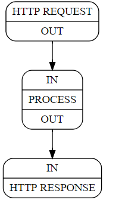

流程图开发及运行
流程图(Graph)是应用的逻辑表述，ModelBox将根据流程图构建应用的处理逻辑。
因此在应用开发中，流程图的开发是首要进行的。流程图开发完毕后，才能明确需要开发的功能单元。
流程图开发模型
流程图的开发的四个步骤
graph LR
A(图的创建) --> B(图的加载) --> C(图的构建) --> D(图的运行)
图的创建： 也叫图的定义，是开发者根据实际的业务需求，按照流程图的开发规范创建的流程图。流程图中标识了功能单元的名称、配置以及数据流向。
图的加载： 用户通过调用ModelBox的函数将图文件或者存储图的内存块加载到ModelBox中， ModelBox会根据配置解析出代码可识别的模型，如果图的配置有问题也会在此时发现并通过返回值获取。此时ModelBox会根据配置中的flowunit以及device去查询当前已加载的驱动库是否有匹配的driver，只有当所有的driver都能正确查询到时，才能正确加载图。
图的构建： 当用户调用对应的ModelBox函数接口时， ModelBox会将解析完毕的图模型转换为各个Node对象，并且创建好数据流通道。 此时所有的node都已经准备好，等有数据到来时既可以直接处理数据。
图的运行： 当用户调用函数接口时， ModelBox会从用户配置的数据源读取数据并按照图构建的路径处理数据，并输出到用户指定的路径中。此时node从前面的节点中获取数据并调用flowunit的处理函数处理数据，并将处理后的数据输出到下一个node中，此时所有的node节点都已经运行起来了，直到数据结束或者用户手动终结流程。
流程图开发
流程图配置
一个流程图使用一份TOML格式的配置表示，配置文件内容如下：
[log]
level="DEBUG"
[driver]
dir=["dir1","dir2"]
skip-default=false
[graph]
graphconf = '''digraph demo {
input[type=input]
output[type=output]
process[flowunit=process]
input->process->output
}'''
graph.graphconffilepath = "/path/to/graphviz/flow.conf"
format = "graphviz"
配置文件项目说明：
- [driver]：用于说明驱动加载路径。
dir: 指定功能单元等驱动加载路径，可以指定多个路径，通过[] 和 ，分隔。skip-default：true表示只扫描dir路径，false表示扫描系统目录和dir路径。
- [graph]：用于指定图的内容。
format指定流程图的格式，目前仅支持graphviz。graphconf为内联graphviz流程图。graph.graphconffilepath为外部流程图文件。
- [log]: 指定图的日志级别。
level: 指定级别，可以是DEBUG, INFO, NOTICE, WARN, ERROR, FATAL, OFF- 注意：修改此级别，将全局影响日志级别，建议仅在调试时使用。
流程图定义
ModelBox默认情况，采用Graphviz DOT语法表达图，关于DOT语法，可以查看Graphviz DOT的指导。
假设有一个简单的业务例子如下图：
- ModelBox启动http server监听80端口
- 当有请求时，调用PROCESS功能处理数据
- 数据处理完成后，再将结果回应到客户端

Graphviz的表达：
digraph G {
node[shape=Mrecord]
// 定义点属性
HTTP_REQUEST[flowunit=http, listen="127.0.0.1:8080", label="{% raw %}{HTTP REQUEST|{OUT}}{% endraw %}"]
PROCESS[flowunit=json, label="{% raw %}{{IN}|PROCESS|{OUT}}{% endraw %}"]
HTTP_RESPONSE[flowunit=http, label="{% raw %}{{IN}|HTTP RESPONSE}{% endraw %}"]
// 定义点关系
HTTP_REQUEST:OUT->PROCESS:IN
PROCESS:OUT->HTTP_RESPONSE:IN
}
完成上述图构成后，即可将上述图，组成ModelBox可识别的配置文件。
ModelBox可识别的配置文件采用TOML配置格式。
生成TOML文件后，即可将配置文件加载到ModelBox中执行。
[graph]
graphconf = '''
digraph G {
node[shape=Mrecord]
// 定义点属性
HTTP_REQUEST[flowunit=http, listen="127.0.0.1:8080", label="{% raw %}{HTTP REQUEST|{OUT}}{% endraw %}"]
PROCESS[flowunit=json, label="{% raw %}{{IN}|PROCESS|{OUT}}{% endraw %}"]
HTTP_RESPONSE[flowunit=http, label="{% raw %}{{IN}|HTTP RESPONSE}{% endraw %}"]
// 定义点关系
HTTP_REQUEST:OUT->PROCESS:IN
PROCESS:OUT->HTTP_RESPONSE:IN
}
'''
format = "graphviz"
关键字说明
下面图的配置，包含三部分。
// 1. 图
digraph G {
node[shape=Mrecord]
// 2. 定义点属性
HTTP_REQUEST[flowunit=http, listen="127.0.0.1:8080", label="{% raw %}{HTTP REQUEST|{OUT}}{% endraw %}"]
PROCESS[flowunit=json, label="{% raw %}{{IN}|PROCESS|{OUT}}{% endraw %}"]
HTTP_RESPONSE[flowunit=http, label="{% raw %}{{IN}|HTTP RESPONSE}{% endraw %}"]
// 3. 定义点关系
HTTP_REQUEST:OUT->PROCESS:IN
PROCESS:OUT->HTTP_RESPONSE:IN
}
第一部分是图
格式
digraph [name]说明
digraph开头，[name]可以是字符串。
第二部分是点Node的定义
格式
name[key=value]说明
name为点的名称，key为node的配置属性，每个节点不同，value为key的配置值。type参数指定点node的类型，可以是input,output,flowunit- 当未指定
type参数时，node缺省为flowunit。 flowunit表示此点为功能单元功能模块，配合flowunit=xx指定，功能单元的执行实体。node[type="flowunit", flowunit=httpserver]上述配置表示，点的名称为
node，类型为flowunit，其执行实体为httpserver。 支持的Flowunit可以使用modelbox-tool工具查询。
input：表示此点的类型为输入端口，为整个图的配置，表示图的数据输入端口。graphinput[type=input]上述配置表示，图输入点的名称为
graphinput，在使用SDK形式调用ModelBox时可以使用此名称发送数据给图。output: 表示此点的类型为输出端口，为整个图的配置，表示图的数据输出端口。graphoutput[type=output]上述配置表示，图输出点的名称为
graphoutput，在使用SDK形式调用ModelBox时可以使用此名称接收图处理后的数据。
第三部分是点的关系定义
格式
name:outport -> name:inport说明
name为点的名称，outport为输出端口名称，inport为输入端口名称。
流程图开发方式
流程图开发时，可采用如下形式进行开发
| 方式 | 说明 | 推荐度 | 连接 |
|---|---|---|---|
| ModelBox编排服务 | 使用ModelBox编排服务进行流程图的开发。 | ⭐️⭐️⭐️ | 指导 |
| 手工编写 | 手工编写toml格式的流程图文件，并添加到ModelBox Server插件中运行 | ⭐️ | 指导 |
流程图的运行
流程图完成后，可以采用下列形式运行流程图
| 方式 | 说明 | 特点 | 推荐度 | 连接 |
|---|---|---|---|---|
| modelbox-server | 使用ModelBox加载运行流程图 | 基本无需编程，只需要通过配置即可完成图的运行 | ⭐️⭐️⭐️ | 指导 |
| modelbox-tool | ModelBox Tool调试 | 调试图时使用的工具，方便，快速检查结果是否正确 | ⭐️⭐️⭐️ | 指导 |
| Python SDK | Python SDK形式 | Python接口形式，方便开发者与当前python服务集成 | ⭐️⭐️ | 指导 |
| C++ SDK | C++ SDK形式 | c++SDK形式，方便开发者与当前c/c++程序集成 | ⭐️⭐️ | 指导 |